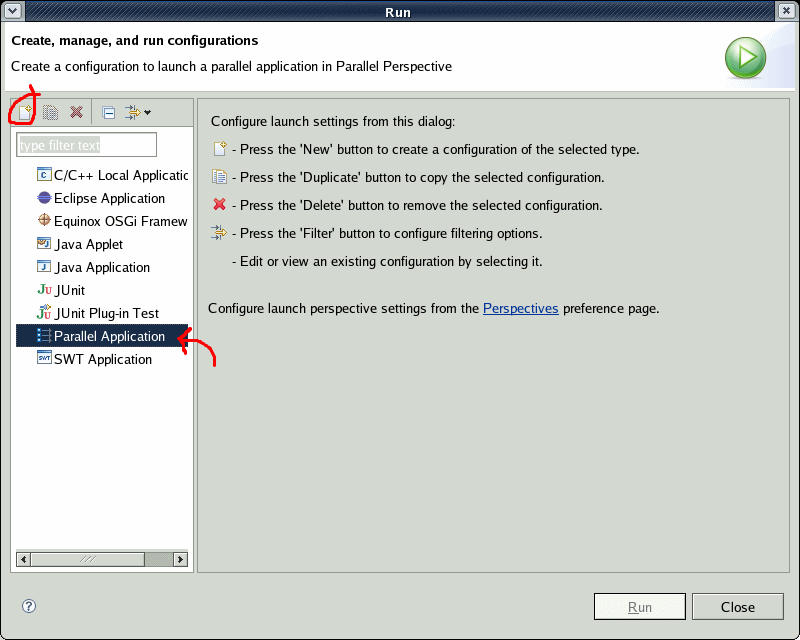
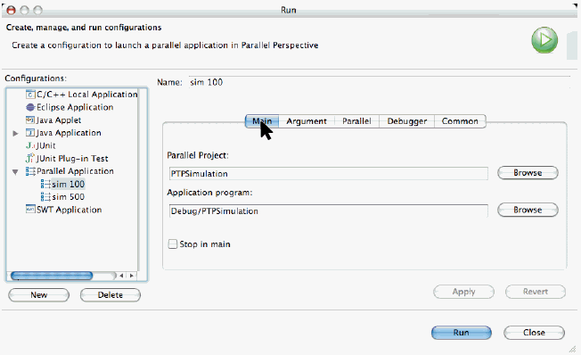
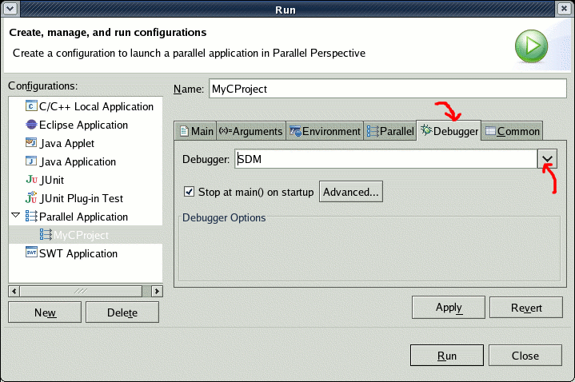

Enter a name for the configuration in the "Name:" field. Here we use the same name as the project.
- Choose the project
- Choose the executable from the project (see red arrows)

- Enter any program arguments
- Change working directory if necessary
- Choose the machine that the job will run on
- Enter the number of processes to run, which was probably
set to "0" initially. Enter a value > 0.
This will dismiss the Error at the top of the
dialog which reports "[Parallel]: Value must be an Integer."
Actually, this should probably say "an integer greater than zero."

- Select the Debugger that will control the parallel processes by selecting "SDM" (the PTP's Scalable Debug Manager) from the selection menu.
- This will dismiss the Error at the top of the dialog which reports "[Debugger]: No debugger available."
